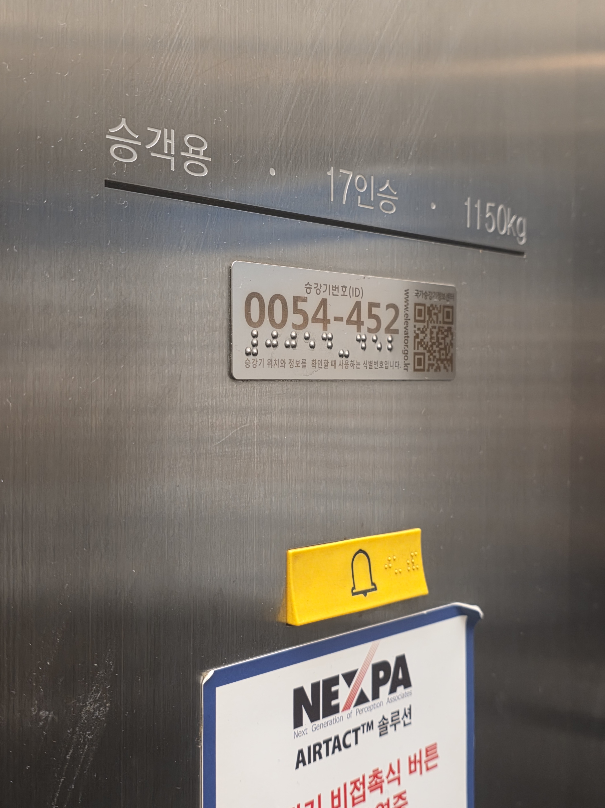
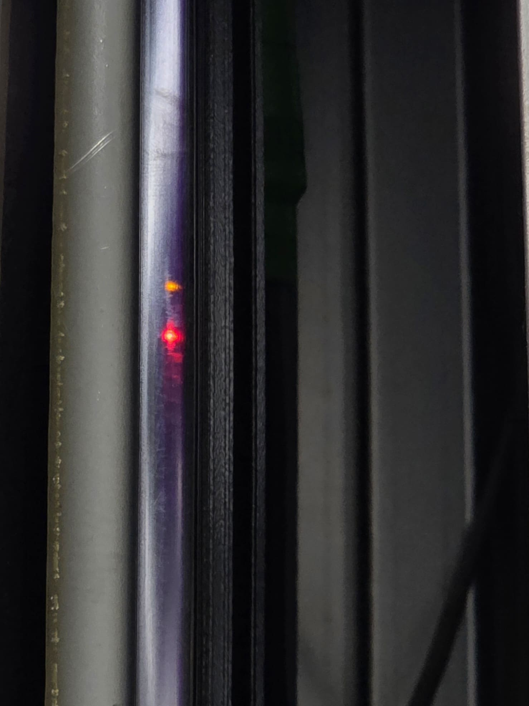
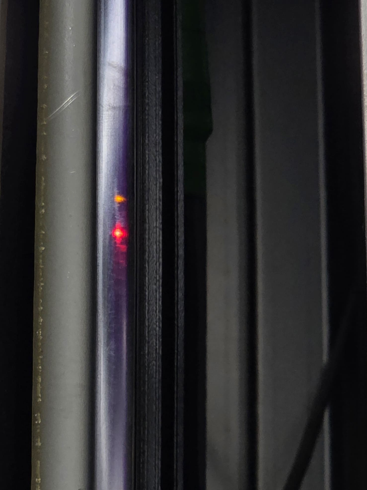

버튼에 있는 점자는 무슨 뜻일까?
엘리베이터의 다양한 버튼들, 그 옆에 있는 점자에는 무슨 내용이 쓰여져 있을까요? 우선 층수를 나타내는 버튼 옆엔 숫자를 나타내는 점자가 들어갑니다. 다만, 점자에서 숫자를 표기할 때는 숫자임을 알려야 해요. 이를 위해 수표를 먼저 붙이는 것이 일반적입니다. (예를 들어, 1층 버튼에는 '수표' 다음에 '1'에 해당하는 점자가 옵니다.) 지하1층, 2층과 같이 앞에 지하가 붙는 층은 지하를 뜻하는 점자가 추가적으로 표기돼요. 열림과 닫힘 버튼에는 과거엔 한자어 '개(開)'와 '폐(閉)'를 사용하는 추세였으나, 시각장애인 단체의 의견에 따라 ‘열림’, ‘닫힘’의 한글 표기를 권장하거나 변경하는 민원이 많다고 합니다. 엘리베이터 외부에 있는 상, 하행 버튼에도 동일하게 한자어 '상(上)'과 '하(下)' 또는 한글 '위/아래'로 표기됩니다. 이러한 점자 표기는 KS(한국산업표준) 규격에 따라 6개의 점만을 사용하는 6점 점자를 사용하는것으로 규제되어있습니다.
우리나라의 엘리베이터를 외국인 시각장애인이 잘 사용할 수 있을까?
쉽게 예상할 수 있듯이 우리나라를 방문한 외국인 시각장애인이 엘리베이터를 이용하는데는 큰 문제가 없습니다. 대부분의 국가에서 점자의 숫자를 표기하는 방식은 공통적인 원리를 따르기 때문이지요. 하지만 한글 점자를 이용하여 표기하는 열림과 닫힘, 위/아래 등의 기능 버튼을 이용할 때는 어려움을 겪는다고 합니다. 이럴 때는 조명 설치를 위해 음각 또는 양각 되어있는 실제 숫자로 유추하는 경우가 많다고 해요. 국제시설에서는 영어로 음성안내가 나오기도 하고 인천공항은 공간의 특수성에 따라 영문 표기도 가능하답니다.
 

점자 외에도 장애인을 위한 규제들이 있을까?
시각장애인 편의시설 설치 매뉴얼에 따르면 엘리베이터의 폭부터 조명까지 장애인의 편리한 엘리베이터 이용을 위한 다양한 규제들이 있어요. 우선 지침으로는 1. 접근이 용이할것 2. 휠체어 사용자를 위해 유효 바닥의 면적이 최소 폭 1.6m, 깊이 1.35m 일것 3. 사람이나 물체가 끼었을 때 닫히던 문이 멈추게 할것 등이 있어요. 실제로 3번의 경우 우리학교 엘리베이터 문에 발을 대보면 빨간 불이 들어오는 것을 발견할 수 있지요. 엘리베이터는 안전한 탑승도 중요하지만 ‘잘 보이는것’도 중요한데요, 이를 위해 내부의 조도가 최소 150럭스 이상이어야 한다는것도 필수사항입니다. 이외에도 버튼은 무조건 양각이어야 하며, 버튼이 동작할 때 점멸되거나 음성 안내가 제공되는것도 장애인을 위한 설계랍니다.